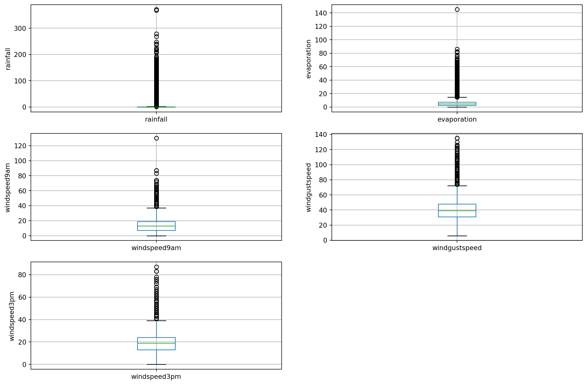
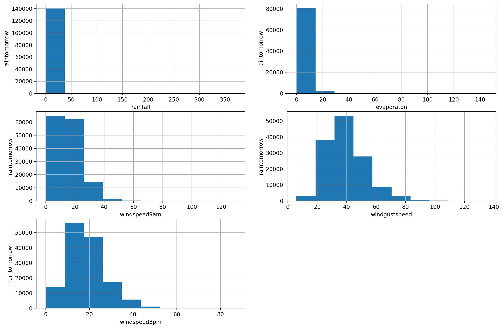

import numpy as np # linear algebra
import pandas as pd # data processing, CSV file I/0 (e.g. pd.read_csv)
import matplotlib.pyplot as plt # data visualization
%matplotlib inlinePrakiraan cuaca
prakiraan
cuaca
Normalisasi data prakiraan hujan
data = pd.read_csv('weather.csv')data| Date | Location | MinTemp | MaxTemp | Rainfall | Evaporation | Sunshine | WindGustDir | WindGustSpeed | WindDir9am | ... | Humidity9am | Humidity3pm | Pressure9am | Pressure3pm | Cloud9am | Cloud3pm | Temp9am | Temp3pm | RainToday | RainTomorrow | |
|---|---|---|---|---|---|---|---|---|---|---|---|---|---|---|---|---|---|---|---|---|---|
| 0 | 2008-12-01 | Albury | 13.4 | 22.9 | 0.6 | NaN | NaN | W | 44.0 | W | ... | 71.0 | 22.0 | 1007.7 | 1007.1 | 8.0 | NaN | 16.9 | 21.8 | No | No |
| 1 | 2008-12-02 | Albury | 7.4 | 25.1 | 0.0 | NaN | NaN | WNW | 44.0 | NNW | ... | 44.0 | 25.0 | 1010.6 | 1007.8 | NaN | NaN | 17.2 | 24.3 | No | No |
| 2 | 2008-12-03 | Albury | 12.9 | 25.7 | 0.0 | NaN | NaN | WSW | 46.0 | W | ... | 38.0 | 30.0 | 1007.6 | 1008.7 | NaN | 2.0 | 21.0 | 23.2 | No | No |
| 3 | 2008-12-04 | Albury | 9.2 | 28.0 | 0.0 | NaN | NaN | NE | 24.0 | SE | ... | 45.0 | 16.0 | 1017.6 | 1012.8 | NaN | NaN | 18.1 | 26.5 | No | No |
| 4 | 2008-12-05 | Albury | 17.5 | 32.3 | 1.0 | NaN | NaN | W | 41.0 | ENE | ... | 82.0 | 33.0 | 1010.8 | 1006.0 | 7.0 | 8.0 | 17.8 | 29.7 | No | No |
| ... | ... | ... | ... | ... | ... | ... | ... | ... | ... | ... | ... | ... | ... | ... | ... | ... | ... | ... | ... | ... | ... |
| 145455 | 2017-06-21 | Uluru | 2.8 | 23.4 | 0.0 | NaN | NaN | E | 31.0 | SE | ... | 51.0 | 24.0 | 1024.6 | 1020.3 | NaN | NaN | 10.1 | 22.4 | No | No |
| 145456 | 2017-06-22 | Uluru | 3.6 | 25.3 | 0.0 | NaN | NaN | NNW | 22.0 | SE | ... | 56.0 | 21.0 | 1023.5 | 1019.1 | NaN | NaN | 10.9 | 24.5 | No | No |
| 145457 | 2017-06-23 | Uluru | 5.4 | 26.9 | 0.0 | NaN | NaN | N | 37.0 | SE | ... | 53.0 | 24.0 | 1021.0 | 1016.8 | NaN | NaN | 12.5 | 26.1 | No | No |
| 145458 | 2017-06-24 | Uluru | 7.8 | 27.0 | 0.0 | NaN | NaN | SE | 28.0 | SSE | ... | 51.0 | 24.0 | 1019.4 | 1016.5 | 3.0 | 2.0 | 15.1 | 26.0 | No | No |
| 145459 | 2017-06-25 | Uluru | 14.9 | NaN | 0.0 | NaN | NaN | NaN | NaN | ESE | ... | 62.0 | 36.0 | 1020.2 | 1017.9 | 8.0 | 8.0 | 15.0 | 20.9 | No | NaN |
145460 rows × 23 columns
data.shape(145460, 23)data.columns = ('dates','location','tempmin','tempmax','rainfall',
'evaporation','sunshine','windgustdir','windgustspeed','winddir9am',
'winddir3pm','windspeed9am','windspeed3pm','humidity9am','humidity3pm',
'pressure9am','pressure3pm','cloud9am','cloud3pm','temp9am',
'temp3pm','raintoday','raintomorrow')data.head()| dates | location | tempmin | tempmax | rainfall | evaporation | sunshine | windgustdir | windgustspeed | winddir9am | ... | humidity9am | humidity3pm | pressure9am | pressure3pm | cloud9am | cloud3pm | temp9am | temp3pm | raintoday | raintomorrow | |
|---|---|---|---|---|---|---|---|---|---|---|---|---|---|---|---|---|---|---|---|---|---|
| 0 | 2008-12-01 | Albury | 13.4 | 22.9 | 0.6 | NaN | NaN | W | 44.0 | W | ... | 71.0 | 22.0 | 1007.7 | 1007.1 | 8.0 | NaN | 16.9 | 21.8 | No | No |
| 1 | 2008-12-02 | Albury | 7.4 | 25.1 | 0.0 | NaN | NaN | WNW | 44.0 | NNW | ... | 44.0 | 25.0 | 1010.6 | 1007.8 | NaN | NaN | 17.2 | 24.3 | No | No |
| 2 | 2008-12-03 | Albury | 12.9 | 25.7 | 0.0 | NaN | NaN | WSW | 46.0 | W | ... | 38.0 | 30.0 | 1007.6 | 1008.7 | NaN | 2.0 | 21.0 | 23.2 | No | No |
| 3 | 2008-12-04 | Albury | 9.2 | 28.0 | 0.0 | NaN | NaN | NE | 24.0 | SE | ... | 45.0 | 16.0 | 1017.6 | 1012.8 | NaN | NaN | 18.1 | 26.5 | No | No |
| 4 | 2008-12-05 | Albury | 17.5 | 32.3 | 1.0 | NaN | NaN | W | 41.0 | ENE | ... | 82.0 | 33.0 | 1010.8 | 1006.0 | 7.0 | 8.0 | 17.8 | 29.7 | No | No |
5 rows × 23 columns
# find categorical variables
categorical = [var for var in data.columns if data[var].dtype=='O']
print('There are {} categorical variables\n'.format(len(categorical)))
print('The categorical variables are :', categorical)There are 7 categorical variables
The categorical variables are : ['dates', 'location', 'windgustdir', 'winddir9am', 'winddir3pm', 'raintoday', 'raintomorrow']data[categorical]| dates | location | windgustdir | winddir9am | winddir3pm | raintoday | raintomorrow | |
|---|---|---|---|---|---|---|---|
| 0 | 2008-12-01 | Albury | W | W | WNW | No | No |
| 1 | 2008-12-02 | Albury | WNW | NNW | WSW | No | No |
| 2 | 2008-12-03 | Albury | WSW | W | WSW | No | No |
| 3 | 2008-12-04 | Albury | NE | SE | E | No | No |
| 4 | 2008-12-05 | Albury | W | ENE | NW | No | No |
| ... | ... | ... | ... | ... | ... | ... | ... |
| 145455 | 2017-06-21 | Uluru | E | SE | ENE | No | No |
| 145456 | 2017-06-22 | Uluru | NNW | SE | N | No | No |
| 145457 | 2017-06-23 | Uluru | N | SE | WNW | No | No |
| 145458 | 2017-06-24 | Uluru | SE | SSE | N | No | No |
| 145459 | 2017-06-25 | Uluru | NaN | ESE | ESE | No | NaN |
145460 rows × 7 columns
data.info()<class 'pandas.core.frame.DataFrame'>
RangeIndex: 145460 entries, 0 to 145459
Data columns (total 23 columns):
# Column Non-Null Count Dtype
--- ------ -------------- -----
0 dates 145460 non-null object
1 location 145460 non-null object
2 tempmin 143975 non-null float64
3 tempmax 144199 non-null float64
4 rainfall 142199 non-null float64
5 evaporation 82670 non-null float64
6 sunshine 75625 non-null float64
7 windgustdir 135134 non-null object
8 windgustspeed 135197 non-null float64
9 winddir9am 134894 non-null object
10 winddir3pm 141232 non-null object
11 windspeed9am 143693 non-null float64
12 windspeed3pm 142398 non-null float64
13 humidity9am 142806 non-null float64
14 humidity3pm 140953 non-null float64
15 pressure9am 130395 non-null float64
16 pressure3pm 130432 non-null float64
17 cloud9am 89572 non-null float64
18 cloud3pm 86102 non-null float64
19 temp9am 143693 non-null float64
20 temp3pm 141851 non-null float64
21 raintoday 142199 non-null object
22 raintomorrow 142193 non-null object
dtypes: float64(16), object(7)
memory usage: 25.5+ MBdata[categorical].isnull().sum()dates 0
location 0
windgustdir 10326
winddir9am 10566
winddir3pm 4228
raintoday 3261
raintomorrow 3267
dtype: int64# view frequency of categorical variables
for var in categorical:
print(data[var].value_counts())dates
2013-11-12 49
2014-09-01 49
2014-08-23 49
2014-08-24 49
2014-08-25 49
..
2007-11-29 1
2007-11-28 1
2007-11-27 1
2007-11-26 1
2008-01-31 1
Name: count, Length: 3436, dtype: int64
location
Canberra 3436
Sydney 3344
Darwin 3193
Melbourne 3193
Brisbane 3193
Adelaide 3193
Perth 3193
Hobart 3193
Albany 3040
MountGambier 3040
Ballarat 3040
Townsville 3040
GoldCoast 3040
Cairns 3040
Launceston 3040
AliceSprings 3040
Bendigo 3040
Albury 3040
MountGinini 3040
Wollongong 3040
Newcastle 3039
Tuggeranong 3039
Penrith 3039
Woomera 3009
Nuriootpa 3009
Cobar 3009
CoffsHarbour 3009
Moree 3009
Sale 3009
PerthAirport 3009
PearceRAAF 3009
Witchcliffe 3009
BadgerysCreek 3009
Mildura 3009
NorfolkIsland 3009
MelbourneAirport 3009
Richmond 3009
SydneyAirport 3009
WaggaWagga 3009
Williamtown 3009
Dartmoor 3009
Watsonia 3009
Portland 3009
Walpole 3006
NorahHead 3004
SalmonGums 3001
Katherine 1578
Nhil 1578
Uluru 1578
Name: count, dtype: int64
windgustdir
W 9915
SE 9418
N 9313
SSE 9216
E 9181
S 9168
WSW 9069
SW 8967
SSW 8736
WNW 8252
NW 8122
ENE 8104
ESE 7372
NE 7133
NNW 6620
NNE 6548
Name: count, dtype: int64
winddir9am
N 11758
SE 9287
E 9176
SSE 9112
NW 8749
S 8659
W 8459
SW 8423
NNE 8129
NNW 7980
ENE 7836
NE 7671
ESE 7630
SSW 7587
WNW 7414
WSW 7024
Name: count, dtype: int64
winddir3pm
SE 10838
W 10110
S 9926
WSW 9518
SSE 9399
SW 9354
N 8890
WNW 8874
NW 8610
ESE 8505
E 8472
NE 8263
SSW 8156
NNW 7870
ENE 7857
NNE 6590
Name: count, dtype: int64
raintoday
No 110319
Yes 31880
Name: count, dtype: int64
raintomorrow
No 110316
Yes 31877
Name: count, dtype: int64# view frequency distribution of categorical variables
for var in categorical:
print(data[var].value_counts()/np.array(len(data),dtype=float))dates
2013-11-12 0.000337
2014-09-01 0.000337
2014-08-23 0.000337
2014-08-24 0.000337
2014-08-25 0.000337
...
2007-11-29 0.000007
2007-11-28 0.000007
2007-11-27 0.000007
2007-11-26 0.000007
2008-01-31 0.000007
Name: count, Length: 3436, dtype: float64
location
Canberra 0.023622
Sydney 0.022989
Darwin 0.021951
Melbourne 0.021951
Brisbane 0.021951
Adelaide 0.021951
Perth 0.021951
Hobart 0.021951
Albany 0.020899
MountGambier 0.020899
Ballarat 0.020899
Townsville 0.020899
GoldCoast 0.020899
Cairns 0.020899
Launceston 0.020899
AliceSprings 0.020899
Bendigo 0.020899
Albury 0.020899
MountGinini 0.020899
Wollongong 0.020899
Newcastle 0.020892
Tuggeranong 0.020892
Penrith 0.020892
Woomera 0.020686
Nuriootpa 0.020686
Cobar 0.020686
CoffsHarbour 0.020686
Moree 0.020686
Sale 0.020686
PerthAirport 0.020686
PearceRAAF 0.020686
Witchcliffe 0.020686
BadgerysCreek 0.020686
Mildura 0.020686
NorfolkIsland 0.020686
MelbourneAirport 0.020686
Richmond 0.020686
SydneyAirport 0.020686
WaggaWagga 0.020686
Williamtown 0.020686
Dartmoor 0.020686
Watsonia 0.020686
Portland 0.020686
Walpole 0.020665
NorahHead 0.020652
SalmonGums 0.020631
Katherine 0.010848
Nhil 0.010848
Uluru 0.010848
Name: count, dtype: float64
windgustdir
W 0.068163
SE 0.064746
N 0.064024
SSE 0.063358
E 0.063117
S 0.063028
WSW 0.062347
SW 0.061646
SSW 0.060058
WNW 0.056730
NW 0.055837
ENE 0.055713
ESE 0.050681
NE 0.049038
NNW 0.045511
NNE 0.045016
Name: count, dtype: float64
winddir9am
N 0.080833
SE 0.063846
E 0.063083
SSE 0.062643
NW 0.060147
S 0.059528
W 0.058153
SW 0.057906
NNE 0.055885
NNW 0.054860
ENE 0.053870
NE 0.052736
ESE 0.052454
SSW 0.052159
WNW 0.050969
WSW 0.048288
Name: count, dtype: float64
winddir3pm
SE 0.074508
W 0.069504
S 0.068239
WSW 0.065434
SSE 0.064616
SW 0.064306
N 0.061116
WNW 0.061006
NW 0.059192
ESE 0.058470
E 0.058243
NE 0.056806
SSW 0.056070
NNW 0.054104
ENE 0.054015
NNE 0.045305
Name: count, dtype: float64
raintoday
No 0.758415
Yes 0.219167
Name: count, dtype: float64
raintomorrow
No 0.758394
Yes 0.219146
Name: count, dtype: float64# check for cardinality in categorical variables
for var in categorical:
print(var, ' contains ', len(data[var].unique()), 'lables')dates contains 3436 lables
location contains 49 lables
windgustdir contains 17 lables
winddir9am contains 17 lables
winddir3pm contains 17 lables
raintoday contains 3 lables
raintomorrow contains 3 lablesdata['dates'].dtypesdtype('O')data['dates'] = pd.to_datetime(data['dates'])# extract year from date
data['Year'] = data['dates'].dt.year
data['Year'].head()0 2008
1 2008
2 2008
3 2008
4 2008
Name: Year, dtype: int32# extract month from date
data['Month'] = data['dates'].dt.month
data['Month'].head()0 12
1 12
2 12
3 12
4 12
Name: Month, dtype: int32# extract day from date
data['Day'] = data['dates'].dt.day
data['Day'].head()0 1
1 2
2 3
3 4
4 5
Name: Day, dtype: int32# drop the original dates variable
data.drop('dates', axis=1, inplace = True)data.head()| location | tempmin | tempmax | rainfall | evaporation | sunshine | windgustdir | windgustspeed | winddir9am | winddir3pm | ... | pressure3pm | cloud9am | cloud3pm | temp9am | temp3pm | raintoday | raintomorrow | Year | Month | Day | |
|---|---|---|---|---|---|---|---|---|---|---|---|---|---|---|---|---|---|---|---|---|---|
| 0 | Albury | 13.4 | 22.9 | 0.6 | NaN | NaN | W | 44.0 | W | WNW | ... | 1007.1 | 8.0 | NaN | 16.9 | 21.8 | No | No | 2008 | 12 | 1 |
| 1 | Albury | 7.4 | 25.1 | 0.0 | NaN | NaN | WNW | 44.0 | NNW | WSW | ... | 1007.8 | NaN | NaN | 17.2 | 24.3 | No | No | 2008 | 12 | 2 |
| 2 | Albury | 12.9 | 25.7 | 0.0 | NaN | NaN | WSW | 46.0 | W | WSW | ... | 1008.7 | NaN | 2.0 | 21.0 | 23.2 | No | No | 2008 | 12 | 3 |
| 3 | Albury | 9.2 | 28.0 | 0.0 | NaN | NaN | NE | 24.0 | SE | E | ... | 1012.8 | NaN | NaN | 18.1 | 26.5 | No | No | 2008 | 12 | 4 |
| 4 | Albury | 17.5 | 32.3 | 1.0 | NaN | NaN | W | 41.0 | ENE | NW | ... | 1006.0 | 7.0 | 8.0 | 17.8 | 29.7 | No | No | 2008 | 12 | 5 |
5 rows × 25 columns
# let's do One Hot Encoding of Location variable
# get k-1 dummy variables after One Hot Encoding
# preview the dataset with head() method
pd.get_dummies(data.location, drop_first=True).head()| Albany | Albury | AliceSprings | BadgerysCreek | Ballarat | Bendigo | Brisbane | Cairns | Canberra | Cobar | ... | Townsville | Tuggeranong | Uluru | WaggaWagga | Walpole | Watsonia | Williamtown | Witchcliffe | Wollongong | Woomera | |
|---|---|---|---|---|---|---|---|---|---|---|---|---|---|---|---|---|---|---|---|---|---|
| 0 | False | True | False | False | False | False | False | False | False | False | ... | False | False | False | False | False | False | False | False | False | False |
| 1 | False | True | False | False | False | False | False | False | False | False | ... | False | False | False | False | False | False | False | False | False | False |
| 2 | False | True | False | False | False | False | False | False | False | False | ... | False | False | False | False | False | False | False | False | False | False |
| 3 | False | True | False | False | False | False | False | False | False | False | ... | False | False | False | False | False | False | False | False | False | False |
| 4 | False | True | False | False | False | False | False | False | False | False | ... | False | False | False | False | False | False | False | False | False | False |
5 rows × 48 columns
mengubah kolom windgustdir
pd.get_dummies(data.windgustdir, drop_first=True,dummy_na=True).head()| ENE | ESE | N | NE | NNE | NNW | NW | S | SE | SSE | SSW | SW | W | WNW | WSW | NaN | |
|---|---|---|---|---|---|---|---|---|---|---|---|---|---|---|---|---|
| 0 | False | False | False | False | False | False | False | False | False | False | False | False | True | False | False | False |
| 1 | False | False | False | False | False | False | False | False | False | False | False | False | False | True | False | False |
| 2 | False | False | False | False | False | False | False | False | False | False | False | False | False | False | True | False |
| 3 | False | False | False | True | False | False | False | False | False | False | False | False | False | False | False | False |
| 4 | False | False | False | False | False | False | False | False | False | False | False | False | True | False | False | False |
mengubah kolom winddir9am
pd.get_dummies(data.winddir9am, drop_first=True,dummy_na=True).head()| ENE | ESE | N | NE | NNE | NNW | NW | S | SE | SSE | SSW | SW | W | WNW | WSW | NaN | |
|---|---|---|---|---|---|---|---|---|---|---|---|---|---|---|---|---|
| 0 | False | False | False | False | False | False | False | False | False | False | False | False | True | False | False | False |
| 1 | False | False | False | False | False | True | False | False | False | False | False | False | False | False | False | False |
| 2 | False | False | False | False | False | False | False | False | False | False | False | False | True | False | False | False |
| 3 | False | False | False | False | False | False | False | False | True | False | False | False | False | False | False | False |
| 4 | True | False | False | False | False | False | False | False | False | False | False | False | False | False | False | False |
mengubah kolom winddir3pm
pd.get_dummies(data.winddir3pm, drop_first=True,dummy_na=True).head()| ENE | ESE | N | NE | NNE | NNW | NW | S | SE | SSE | SSW | SW | W | WNW | WSW | NaN | |
|---|---|---|---|---|---|---|---|---|---|---|---|---|---|---|---|---|
| 0 | False | False | False | False | False | False | False | False | False | False | False | False | False | True | False | False |
| 1 | False | False | False | False | False | False | False | False | False | False | False | False | False | False | True | False |
| 2 | False | False | False | False | False | False | False | False | False | False | False | False | False | False | True | False |
| 3 | False | False | False | False | False | False | False | False | False | False | False | False | False | False | False | False |
| 4 | False | False | False | False | False | False | True | False | False | False | False | False | False | False | False | False |
mengubah kolom raintoday
pd.get_dummies(data.raintoday, drop_first=True,dummy_na=True).head()| Yes | NaN | |
|---|---|---|
| 0 | False | False |
| 1 | False | False |
| 2 | False | False |
| 3 | False | False |
| 4 | False | False |
mengubah kolom raintomorrow
pd.get_dummies(data.raintomorrow, drop_first=True,dummy_na=True).head()| Yes | NaN | |
|---|---|---|
| 0 | False | False |
| 1 | False | False |
| 2 | False | False |
| 3 | False | False |
| 4 | False | False |
mencari data numerik
# find categorical variables
numeric = [var for var in data.columns if data[var].dtype!='O']
print('There are {} numeric variables\n'.format(len(numeric)))
print('The numeric variables are :', numeric)There are 19 numeric variables
The numeric variables are : ['tempmin', 'tempmax', 'rainfall', 'evaporation', 'sunshine', 'windgustspeed', 'windspeed9am', 'windspeed3pm', 'humidity9am', 'humidity3pm', 'pressure9am', 'pressure3pm', 'cloud9am', 'cloud3pm', 'temp9am', 'temp3pm', 'Year', 'Month', 'Day']data[numeric]| tempmin | tempmax | rainfall | evaporation | sunshine | windgustspeed | windspeed9am | windspeed3pm | humidity9am | humidity3pm | pressure9am | pressure3pm | cloud9am | cloud3pm | temp9am | temp3pm | Year | Month | Day | |
|---|---|---|---|---|---|---|---|---|---|---|---|---|---|---|---|---|---|---|---|
| 0 | 13.4 | 22.9 | 0.6 | NaN | NaN | 44.0 | 20.0 | 24.0 | 71.0 | 22.0 | 1007.7 | 1007.1 | 8.0 | NaN | 16.9 | 21.8 | 2008 | 12 | 1 |
| 1 | 7.4 | 25.1 | 0.0 | NaN | NaN | 44.0 | 4.0 | 22.0 | 44.0 | 25.0 | 1010.6 | 1007.8 | NaN | NaN | 17.2 | 24.3 | 2008 | 12 | 2 |
| 2 | 12.9 | 25.7 | 0.0 | NaN | NaN | 46.0 | 19.0 | 26.0 | 38.0 | 30.0 | 1007.6 | 1008.7 | NaN | 2.0 | 21.0 | 23.2 | 2008 | 12 | 3 |
| 3 | 9.2 | 28.0 | 0.0 | NaN | NaN | 24.0 | 11.0 | 9.0 | 45.0 | 16.0 | 1017.6 | 1012.8 | NaN | NaN | 18.1 | 26.5 | 2008 | 12 | 4 |
| 4 | 17.5 | 32.3 | 1.0 | NaN | NaN | 41.0 | 7.0 | 20.0 | 82.0 | 33.0 | 1010.8 | 1006.0 | 7.0 | 8.0 | 17.8 | 29.7 | 2008 | 12 | 5 |
| ... | ... | ... | ... | ... | ... | ... | ... | ... | ... | ... | ... | ... | ... | ... | ... | ... | ... | ... | ... |
| 145455 | 2.8 | 23.4 | 0.0 | NaN | NaN | 31.0 | 13.0 | 11.0 | 51.0 | 24.0 | 1024.6 | 1020.3 | NaN | NaN | 10.1 | 22.4 | 2017 | 6 | 21 |
| 145456 | 3.6 | 25.3 | 0.0 | NaN | NaN | 22.0 | 13.0 | 9.0 | 56.0 | 21.0 | 1023.5 | 1019.1 | NaN | NaN | 10.9 | 24.5 | 2017 | 6 | 22 |
| 145457 | 5.4 | 26.9 | 0.0 | NaN | NaN | 37.0 | 9.0 | 9.0 | 53.0 | 24.0 | 1021.0 | 1016.8 | NaN | NaN | 12.5 | 26.1 | 2017 | 6 | 23 |
| 145458 | 7.8 | 27.0 | 0.0 | NaN | NaN | 28.0 | 13.0 | 7.0 | 51.0 | 24.0 | 1019.4 | 1016.5 | 3.0 | 2.0 | 15.1 | 26.0 | 2017 | 6 | 24 |
| 145459 | 14.9 | NaN | 0.0 | NaN | NaN | NaN | 17.0 | 17.0 | 62.0 | 36.0 | 1020.2 | 1017.9 | 8.0 | 8.0 | 15.0 | 20.9 | 2017 | 6 | 25 |
145460 rows × 19 columns
data[numeric].duplicated().sum()1data[numeric].isnull().sum()tempmin 1485
tempmax 1261
rainfall 3261
evaporation 62790
sunshine 69835
windgustspeed 10263
windspeed9am 1767
windspeed3pm 3062
humidity9am 2654
humidity3pm 4507
pressure9am 15065
pressure3pm 15028
cloud9am 55888
cloud3pm 59358
temp9am 1767
temp3pm 3609
Year 0
Month 0
Day 0
dtype: int64print(round(data[numeric].describe()),2) tempmin tempmax rainfall evaporation sunshine windgustspeed \
count 143975.0 144199.0 142199.0 82670.0 75625.0 135197.0
mean 12.0 23.0 2.0 5.0 8.0 40.0
std 6.0 7.0 8.0 4.0 4.0 14.0
min -8.0 -5.0 0.0 0.0 0.0 6.0
25% 8.0 18.0 0.0 3.0 5.0 31.0
50% 12.0 23.0 0.0 5.0 8.0 39.0
75% 17.0 28.0 1.0 7.0 11.0 48.0
max 34.0 48.0 371.0 145.0 14.0 135.0
windspeed9am windspeed3pm humidity9am humidity3pm pressure9am \
count 143693.0 142398.0 142806.0 140953.0 130395.0
mean 14.0 19.0 69.0 52.0 1018.0
std 9.0 9.0 19.0 21.0 7.0
min 0.0 0.0 0.0 0.0 980.0
25% 7.0 13.0 57.0 37.0 1013.0
50% 13.0 19.0 70.0 52.0 1018.0
75% 19.0 24.0 83.0 66.0 1022.0
max 130.0 87.0 100.0 100.0 1041.0
pressure3pm cloud9am cloud3pm temp9am temp3pm Year \
count 130432.0 89572.0 86102.0 143693.0 141851.0 145460.0
mean 1015.0 4.0 5.0 17.0 22.0 2013.0
std 7.0 3.0 3.0 6.0 7.0 3.0
min 977.0 0.0 0.0 -7.0 -5.0 2007.0
25% 1010.0 1.0 2.0 12.0 17.0 2011.0
50% 1015.0 5.0 5.0 17.0 21.0 2013.0
75% 1020.0 7.0 7.0 22.0 26.0 2015.0
max 1040.0 9.0 9.0 40.0 47.0 2017.0
Month Day
count 145460.0 145460.0
mean 6.0 16.0
std 3.0 9.0
min 1.0 1.0
25% 3.0 8.0
50% 6.0 16.0
75% 9.0 23.0
max 12.0 31.0 2rainfall,evaporation,windspeed9am,windgustspeed,windspeed3pm
plt.figure(figsize=(15,10))
plt.subplot(3,2,1)
fig = data.boxplot(column='rainfall')
fig.set_title('')
fig.set_ylabel('rainfall')
plt.subplot(3,2,2)
fig = data.boxplot(column='evaporation')
fig.set_title('')
fig.set_ylabel('evaporation')
plt.subplot(3,2,3)
fig = data.boxplot(column='windspeed9am')
fig.set_title('')
fig.set_ylabel('windspeed9am')
plt.subplot(3,2,4)
fig = data.boxplot(column='windgustspeed')
fig.set_title('')
fig.set_ylabel('windgustspeed')
plt.subplot(3,2,5)
fig = data.boxplot(column='windspeed3pm')
fig.set_title('')
fig.set_ylabel('windspeed3pm')Text(0, 0.5, 'windspeed3pm')
plt.figure(figsize=(15,10))
plt.subplot(3,2,1)
fig = data.rainfall.hist(bins=10)
fig.set_xlabel('rainfall')
fig.set_ylabel('raintomorrow')
plt.subplot(3,2,2)
fig = data.evaporation.hist(bins=10)
fig.set_xlabel('evaporaton')
fig.set_ylabel('raintomorrow')
plt.subplot(3,2,3)
fig = data.windspeed9am.hist(bins=10)
fig.set_xlabel('windspeed9am')
fig.set_ylabel('raintomorrow')
plt.subplot(3,2,4)
fig = data.windgustspeed.hist(bins=10)
fig.set_xlabel('windgustspeed')
fig.set_ylabel('raintomorrow')
plt.subplot(3,2,5)
fig = data.windspeed3pm.hist(bins=10)
fig.set_xlabel('windspeed3pm')
fig.set_ylabel('raintomorrow')Text(0, 0.5, 'raintomorrow')
# find outliers for rainfall variable
IQR = data.rainfall.quantile(0.75) - data.rainfall.quantile(0.25)
Lower_fence = data.rainfall.quantile(0.25) - (IQR * 3)
Upper_fence = data.rainfall.quantile(0.75) + (IQR * 3)
print('rainfall outliers are values < {lowerboundary} or > {upperboundary}'.format(lowerboundary=Lower_fence, upperboundary=Upper_fence))
IQR = data.evaporation.quantile(0.75) - data.evaporation.quantile(0.25)
Lower_fence = data.evaporation.quantile(0.25) - (IQR * 3)
Upper_fence = data.evaporation.quantile(0.75) + (IQR * 3)
print('evaporation outliers are values < {lowerboundary} or > {upperboundary}'.format(lowerboundary=Lower_fence, upperboundary=Upper_fence))
IQR = data.windspeed9am.quantile(0.75) - data.windspeed9am.quantile(0.25)
Lower_fence = data.windspeed9am.quantile(0.25) - (IQR * 3)
Upper_fence = data.windspeed9am.quantile(0.75) + (IQR * 3)
print('windspeed9am outliers are values < {lowerboundary} or > {upperboundary}'.format(lowerboundary=Lower_fence, upperboundary=Upper_fence))
IQR = data.windgustspeed.quantile(0.75) - data.windgustspeed.quantile(0.25)
Lower_fence = data.windgustspeed.quantile(0.25) - (IQR * 3)
Upper_fence = data.windgustspeed.quantile(0.75) + (IQR * 3)
print('windgustspeed outliers are values < {lowerboundary} or > {upperboundary}'.format(lowerboundary=Lower_fence, upperboundary=Upper_fence))
IQR = data.windspeed3pm.quantile(0.75) - data.windspeed3pm.quantile(0.25)
Lower_fence = data.windspeed3pm.quantile(0.25) - (IQR * 3)
Upper_fence = data.windspeed3pm.quantile(0.75) + (IQR * 3)
print('windspeed3pm outliers are values < {lowerboundary} or > {upperboundary}'.format(lowerboundary=Lower_fence, upperboundary=Upper_fence))rainfall outliers are values < -2.4000000000000004 or > 3.2
evaporation outliers are values < -11.800000000000002 or > 21.800000000000004
windspeed9am outliers are values < -29.0 or > 55.0
windgustspeed outliers are values < -20.0 or > 99.0
windspeed3pm outliers are values < -20.0 or > 57.0data[numeric].isnull().sum()tempmin 1485
tempmax 1261
rainfall 3261
evaporation 62790
sunshine 69835
windgustspeed 10263
windspeed9am 1767
windspeed3pm 3062
humidity9am 2654
humidity3pm 4507
pressure9am 15065
pressure3pm 15028
cloud9am 55888
cloud3pm 59358
temp9am 1767
temp3pm 3609
Year 0
Month 0
Day 0
dtype: int64x = data.drop(['raintomorrow'], axis=1)
y = data['raintomorrow']# split x and y info training and testing sets
from sklearn.model_selection import train_test_split
x_train, x_test, y_train, y_test = train_test_split(x, y, test_size = 0.2, random_state = 0)/usr/lib/python3/dist-packages/scipy/__init__.py:146: UserWarning: A NumPy version >=1.17.3 and <1.25.0 is required for this version of SciPy (detected version 1.26.4
warnings.warn(f"A NumPy version >={np_minversion} and <{np_maxversion}"# check the shape of x_train and x_test
x_train.shape, x_test.shape((116368, 24), (29092, 24))# print percentage of missing values in the numerical variables in training set
for col in numeric:
if x_train[col].isnull().mean()>0:
print(col, round(x_train[col].isnull().mean(),4))tempmin 0.0102
tempmax 0.0088
rainfall 0.0225
evaporation 0.4327
sunshine 0.4804
windgustspeed 0.0706
windspeed9am 0.0121
windspeed3pm 0.0211
humidity9am 0.0185
humidity3pm 0.0309
pressure9am 0.1039
pressure3pm 0.1037
cloud9am 0.385
cloud3pm 0.4087
temp9am 0.0122
temp3pm 0.0246# impute missing values in x_train and x_test with respective column median in x_train
for df1 in[x_train, x_test]:
for col in numeric:
col_median=x_train[col].median()
df1[col].fillna(col_median, inplace=True)
#print(df1[col])/tmp/ipykernel_19002/151397047.py:6: FutureWarning: A value is trying to be set on a copy of a DataFrame or Series through chained assignment using an inplace method.
The behavior will change in pandas 3.0. This inplace method will never work because the intermediate object on which we are setting values always behaves as a copy.
For example, when doing 'df[col].method(value, inplace=True)', try using 'df.method({col: value}, inplace=True)' or df[col] = df[col].method(value) instead, to perform the operation inplace on the original object.
df1[col].fillna(col_median, inplace=True)
/tmp/ipykernel_19002/151397047.py:6: FutureWarning: A value is trying to be set on a copy of a DataFrame or Series through chained assignment using an inplace method.
The behavior will change in pandas 3.0. This inplace method will never work because the intermediate object on which we are setting values always behaves as a copy.
For example, when doing 'df[col].method(value, inplace=True)', try using 'df.method({col: value}, inplace=True)' or df[col] = df[col].method(value) instead, to perform the operation inplace on the original object.
df1[col].fillna(col_median, inplace=True)
/tmp/ipykernel_19002/151397047.py:6: FutureWarning: A value is trying to be set on a copy of a DataFrame or Series through chained assignment using an inplace method.
The behavior will change in pandas 3.0. This inplace method will never work because the intermediate object on which we are setting values always behaves as a copy.
For example, when doing 'df[col].method(value, inplace=True)', try using 'df.method({col: value}, inplace=True)' or df[col] = df[col].method(value) instead, to perform the operation inplace on the original object.
df1[col].fillna(col_median, inplace=True)
/tmp/ipykernel_19002/151397047.py:6: FutureWarning: A value is trying to be set on a copy of a DataFrame or Series through chained assignment using an inplace method.
The behavior will change in pandas 3.0. This inplace method will never work because the intermediate object on which we are setting values always behaves as a copy.
For example, when doing 'df[col].method(value, inplace=True)', try using 'df.method({col: value}, inplace=True)' or df[col] = df[col].method(value) instead, to perform the operation inplace on the original object.
df1[col].fillna(col_median, inplace=True)
/tmp/ipykernel_19002/151397047.py:6: FutureWarning: A value is trying to be set on a copy of a DataFrame or Series through chained assignment using an inplace method.
The behavior will change in pandas 3.0. This inplace method will never work because the intermediate object on which we are setting values always behaves as a copy.
For example, when doing 'df[col].method(value, inplace=True)', try using 'df.method({col: value}, inplace=True)' or df[col] = df[col].method(value) instead, to perform the operation inplace on the original object.
df1[col].fillna(col_median, inplace=True)
/tmp/ipykernel_19002/151397047.py:6: FutureWarning: A value is trying to be set on a copy of a DataFrame or Series through chained assignment using an inplace method.
The behavior will change in pandas 3.0. This inplace method will never work because the intermediate object on which we are setting values always behaves as a copy.
For example, when doing 'df[col].method(value, inplace=True)', try using 'df.method({col: value}, inplace=True)' or df[col] = df[col].method(value) instead, to perform the operation inplace on the original object.
df1[col].fillna(col_median, inplace=True)
/tmp/ipykernel_19002/151397047.py:6: FutureWarning: A value is trying to be set on a copy of a DataFrame or Series through chained assignment using an inplace method.
The behavior will change in pandas 3.0. This inplace method will never work because the intermediate object on which we are setting values always behaves as a copy.
For example, when doing 'df[col].method(value, inplace=True)', try using 'df.method({col: value}, inplace=True)' or df[col] = df[col].method(value) instead, to perform the operation inplace on the original object.
df1[col].fillna(col_median, inplace=True)
/tmp/ipykernel_19002/151397047.py:6: FutureWarning: A value is trying to be set on a copy of a DataFrame or Series through chained assignment using an inplace method.
The behavior will change in pandas 3.0. This inplace method will never work because the intermediate object on which we are setting values always behaves as a copy.
For example, when doing 'df[col].method(value, inplace=True)', try using 'df.method({col: value}, inplace=True)' or df[col] = df[col].method(value) instead, to perform the operation inplace on the original object.
df1[col].fillna(col_median, inplace=True)
/tmp/ipykernel_19002/151397047.py:6: FutureWarning: A value is trying to be set on a copy of a DataFrame or Series through chained assignment using an inplace method.
The behavior will change in pandas 3.0. This inplace method will never work because the intermediate object on which we are setting values always behaves as a copy.
For example, when doing 'df[col].method(value, inplace=True)', try using 'df.method({col: value}, inplace=True)' or df[col] = df[col].method(value) instead, to perform the operation inplace on the original object.
df1[col].fillna(col_median, inplace=True)
/tmp/ipykernel_19002/151397047.py:6: FutureWarning: A value is trying to be set on a copy of a DataFrame or Series through chained assignment using an inplace method.
The behavior will change in pandas 3.0. This inplace method will never work because the intermediate object on which we are setting values always behaves as a copy.
For example, when doing 'df[col].method(value, inplace=True)', try using 'df.method({col: value}, inplace=True)' or df[col] = df[col].method(value) instead, to perform the operation inplace on the original object.
df1[col].fillna(col_median, inplace=True)
/tmp/ipykernel_19002/151397047.py:6: FutureWarning: A value is trying to be set on a copy of a DataFrame or Series through chained assignment using an inplace method.
The behavior will change in pandas 3.0. This inplace method will never work because the intermediate object on which we are setting values always behaves as a copy.
For example, when doing 'df[col].method(value, inplace=True)', try using 'df.method({col: value}, inplace=True)' or df[col] = df[col].method(value) instead, to perform the operation inplace on the original object.
df1[col].fillna(col_median, inplace=True)
/tmp/ipykernel_19002/151397047.py:6: FutureWarning: A value is trying to be set on a copy of a DataFrame or Series through chained assignment using an inplace method.
The behavior will change in pandas 3.0. This inplace method will never work because the intermediate object on which we are setting values always behaves as a copy.
For example, when doing 'df[col].method(value, inplace=True)', try using 'df.method({col: value}, inplace=True)' or df[col] = df[col].method(value) instead, to perform the operation inplace on the original object.
df1[col].fillna(col_median, inplace=True)
/tmp/ipykernel_19002/151397047.py:6: FutureWarning: A value is trying to be set on a copy of a DataFrame or Series through chained assignment using an inplace method.
The behavior will change in pandas 3.0. This inplace method will never work because the intermediate object on which we are setting values always behaves as a copy.
For example, when doing 'df[col].method(value, inplace=True)', try using 'df.method({col: value}, inplace=True)' or df[col] = df[col].method(value) instead, to perform the operation inplace on the original object.
df1[col].fillna(col_median, inplace=True)
/tmp/ipykernel_19002/151397047.py:6: FutureWarning: A value is trying to be set on a copy of a DataFrame or Series through chained assignment using an inplace method.
The behavior will change in pandas 3.0. This inplace method will never work because the intermediate object on which we are setting values always behaves as a copy.
For example, when doing 'df[col].method(value, inplace=True)', try using 'df.method({col: value}, inplace=True)' or df[col] = df[col].method(value) instead, to perform the operation inplace on the original object.
df1[col].fillna(col_median, inplace=True)
/tmp/ipykernel_19002/151397047.py:6: FutureWarning: A value is trying to be set on a copy of a DataFrame or Series through chained assignment using an inplace method.
The behavior will change in pandas 3.0. This inplace method will never work because the intermediate object on which we are setting values always behaves as a copy.
For example, when doing 'df[col].method(value, inplace=True)', try using 'df.method({col: value}, inplace=True)' or df[col] = df[col].method(value) instead, to perform the operation inplace on the original object.
df1[col].fillna(col_median, inplace=True)
/tmp/ipykernel_19002/151397047.py:6: FutureWarning: A value is trying to be set on a copy of a DataFrame or Series through chained assignment using an inplace method.
The behavior will change in pandas 3.0. This inplace method will never work because the intermediate object on which we are setting values always behaves as a copy.
For example, when doing 'df[col].method(value, inplace=True)', try using 'df.method({col: value}, inplace=True)' or df[col] = df[col].method(value) instead, to perform the operation inplace on the original object.
df1[col].fillna(col_median, inplace=True)
/tmp/ipykernel_19002/151397047.py:6: FutureWarning: A value is trying to be set on a copy of a DataFrame or Series through chained assignment using an inplace method.
The behavior will change in pandas 3.0. This inplace method will never work because the intermediate object on which we are setting values always behaves as a copy.
For example, when doing 'df[col].method(value, inplace=True)', try using 'df.method({col: value}, inplace=True)' or df[col] = df[col].method(value) instead, to perform the operation inplace on the original object.
df1[col].fillna(col_median, inplace=True)
/tmp/ipykernel_19002/151397047.py:6: FutureWarning: A value is trying to be set on a copy of a DataFrame or Series through chained assignment using an inplace method.
The behavior will change in pandas 3.0. This inplace method will never work because the intermediate object on which we are setting values always behaves as a copy.
For example, when doing 'df[col].method(value, inplace=True)', try using 'df.method({col: value}, inplace=True)' or df[col] = df[col].method(value) instead, to perform the operation inplace on the original object.
df1[col].fillna(col_median, inplace=True)
/tmp/ipykernel_19002/151397047.py:6: FutureWarning: A value is trying to be set on a copy of a DataFrame or Series through chained assignment using an inplace method.
The behavior will change in pandas 3.0. This inplace method will never work because the intermediate object on which we are setting values always behaves as a copy.
For example, when doing 'df[col].method(value, inplace=True)', try using 'df.method({col: value}, inplace=True)' or df[col] = df[col].method(value) instead, to perform the operation inplace on the original object.
df1[col].fillna(col_median, inplace=True)
/tmp/ipykernel_19002/151397047.py:6: FutureWarning: A value is trying to be set on a copy of a DataFrame or Series through chained assignment using an inplace method.
The behavior will change in pandas 3.0. This inplace method will never work because the intermediate object on which we are setting values always behaves as a copy.
For example, when doing 'df[col].method(value, inplace=True)', try using 'df.method({col: value}, inplace=True)' or df[col] = df[col].method(value) instead, to perform the operation inplace on the original object.
df1[col].fillna(col_median, inplace=True)
/tmp/ipykernel_19002/151397047.py:6: FutureWarning: A value is trying to be set on a copy of a DataFrame or Series through chained assignment using an inplace method.
The behavior will change in pandas 3.0. This inplace method will never work because the intermediate object on which we are setting values always behaves as a copy.
For example, when doing 'df[col].method(value, inplace=True)', try using 'df.method({col: value}, inplace=True)' or df[col] = df[col].method(value) instead, to perform the operation inplace on the original object.
df1[col].fillna(col_median, inplace=True)
/tmp/ipykernel_19002/151397047.py:6: FutureWarning: A value is trying to be set on a copy of a DataFrame or Series through chained assignment using an inplace method.
The behavior will change in pandas 3.0. This inplace method will never work because the intermediate object on which we are setting values always behaves as a copy.
For example, when doing 'df[col].method(value, inplace=True)', try using 'df.method({col: value}, inplace=True)' or df[col] = df[col].method(value) instead, to perform the operation inplace on the original object.
df1[col].fillna(col_median, inplace=True)
/tmp/ipykernel_19002/151397047.py:6: FutureWarning: A value is trying to be set on a copy of a DataFrame or Series through chained assignment using an inplace method.
The behavior will change in pandas 3.0. This inplace method will never work because the intermediate object on which we are setting values always behaves as a copy.
For example, when doing 'df[col].method(value, inplace=True)', try using 'df.method({col: value}, inplace=True)' or df[col] = df[col].method(value) instead, to perform the operation inplace on the original object.
df1[col].fillna(col_median, inplace=True)
/tmp/ipykernel_19002/151397047.py:6: FutureWarning: A value is trying to be set on a copy of a DataFrame or Series through chained assignment using an inplace method.
The behavior will change in pandas 3.0. This inplace method will never work because the intermediate object on which we are setting values always behaves as a copy.
For example, when doing 'df[col].method(value, inplace=True)', try using 'df.method({col: value}, inplace=True)' or df[col] = df[col].method(value) instead, to perform the operation inplace on the original object.
df1[col].fillna(col_median, inplace=True)
/tmp/ipykernel_19002/151397047.py:6: FutureWarning: A value is trying to be set on a copy of a DataFrame or Series through chained assignment using an inplace method.
The behavior will change in pandas 3.0. This inplace method will never work because the intermediate object on which we are setting values always behaves as a copy.
For example, when doing 'df[col].method(value, inplace=True)', try using 'df.method({col: value}, inplace=True)' or df[col] = df[col].method(value) instead, to perform the operation inplace on the original object.
df1[col].fillna(col_median, inplace=True)
/tmp/ipykernel_19002/151397047.py:6: FutureWarning: A value is trying to be set on a copy of a DataFrame or Series through chained assignment using an inplace method.
The behavior will change in pandas 3.0. This inplace method will never work because the intermediate object on which we are setting values always behaves as a copy.
For example, when doing 'df[col].method(value, inplace=True)', try using 'df.method({col: value}, inplace=True)' or df[col] = df[col].method(value) instead, to perform the operation inplace on the original object.
df1[col].fillna(col_median, inplace=True)
/tmp/ipykernel_19002/151397047.py:6: FutureWarning: A value is trying to be set on a copy of a DataFrame or Series through chained assignment using an inplace method.
The behavior will change in pandas 3.0. This inplace method will never work because the intermediate object on which we are setting values always behaves as a copy.
For example, when doing 'df[col].method(value, inplace=True)', try using 'df.method({col: value}, inplace=True)' or df[col] = df[col].method(value) instead, to perform the operation inplace on the original object.
df1[col].fillna(col_median, inplace=True)
/tmp/ipykernel_19002/151397047.py:6: FutureWarning: A value is trying to be set on a copy of a DataFrame or Series through chained assignment using an inplace method.
The behavior will change in pandas 3.0. This inplace method will never work because the intermediate object on which we are setting values always behaves as a copy.
For example, when doing 'df[col].method(value, inplace=True)', try using 'df.method({col: value}, inplace=True)' or df[col] = df[col].method(value) instead, to perform the operation inplace on the original object.
df1[col].fillna(col_median, inplace=True)
/tmp/ipykernel_19002/151397047.py:6: FutureWarning: A value is trying to be set on a copy of a DataFrame or Series through chained assignment using an inplace method.
The behavior will change in pandas 3.0. This inplace method will never work because the intermediate object on which we are setting values always behaves as a copy.
For example, when doing 'df[col].method(value, inplace=True)', try using 'df.method({col: value}, inplace=True)' or df[col] = df[col].method(value) instead, to perform the operation inplace on the original object.
df1[col].fillna(col_median, inplace=True)
/tmp/ipykernel_19002/151397047.py:6: FutureWarning: A value is trying to be set on a copy of a DataFrame or Series through chained assignment using an inplace method.
The behavior will change in pandas 3.0. This inplace method will never work because the intermediate object on which we are setting values always behaves as a copy.
For example, when doing 'df[col].method(value, inplace=True)', try using 'df.method({col: value}, inplace=True)' or df[col] = df[col].method(value) instead, to perform the operation inplace on the original object.
df1[col].fillna(col_median, inplace=True)
/tmp/ipykernel_19002/151397047.py:6: FutureWarning: A value is trying to be set on a copy of a DataFrame or Series through chained assignment using an inplace method.
The behavior will change in pandas 3.0. This inplace method will never work because the intermediate object on which we are setting values always behaves as a copy.
For example, when doing 'df[col].method(value, inplace=True)', try using 'df.method({col: value}, inplace=True)' or df[col] = df[col].method(value) instead, to perform the operation inplace on the original object.
df1[col].fillna(col_median, inplace=True)
/tmp/ipykernel_19002/151397047.py:6: FutureWarning: A value is trying to be set on a copy of a DataFrame or Series through chained assignment using an inplace method.
The behavior will change in pandas 3.0. This inplace method will never work because the intermediate object on which we are setting values always behaves as a copy.
For example, when doing 'df[col].method(value, inplace=True)', try using 'df.method({col: value}, inplace=True)' or df[col] = df[col].method(value) instead, to perform the operation inplace on the original object.
df1[col].fillna(col_median, inplace=True)
/tmp/ipykernel_19002/151397047.py:6: FutureWarning: A value is trying to be set on a copy of a DataFrame or Series through chained assignment using an inplace method.
The behavior will change in pandas 3.0. This inplace method will never work because the intermediate object on which we are setting values always behaves as a copy.
For example, when doing 'df[col].method(value, inplace=True)', try using 'df.method({col: value}, inplace=True)' or df[col] = df[col].method(value) instead, to perform the operation inplace on the original object.
df1[col].fillna(col_median, inplace=True)
/tmp/ipykernel_19002/151397047.py:6: FutureWarning: A value is trying to be set on a copy of a DataFrame or Series through chained assignment using an inplace method.
The behavior will change in pandas 3.0. This inplace method will never work because the intermediate object on which we are setting values always behaves as a copy.
For example, when doing 'df[col].method(value, inplace=True)', try using 'df.method({col: value}, inplace=True)' or df[col] = df[col].method(value) instead, to perform the operation inplace on the original object.
df1[col].fillna(col_median, inplace=True)
/tmp/ipykernel_19002/151397047.py:6: FutureWarning: A value is trying to be set on a copy of a DataFrame or Series through chained assignment using an inplace method.
The behavior will change in pandas 3.0. This inplace method will never work because the intermediate object on which we are setting values always behaves as a copy.
For example, when doing 'df[col].method(value, inplace=True)', try using 'df.method({col: value}, inplace=True)' or df[col] = df[col].method(value) instead, to perform the operation inplace on the original object.
df1[col].fillna(col_median, inplace=True)
/tmp/ipykernel_19002/151397047.py:6: FutureWarning: A value is trying to be set on a copy of a DataFrame or Series through chained assignment using an inplace method.
The behavior will change in pandas 3.0. This inplace method will never work because the intermediate object on which we are setting values always behaves as a copy.
For example, when doing 'df[col].method(value, inplace=True)', try using 'df.method({col: value}, inplace=True)' or df[col] = df[col].method(value) instead, to perform the operation inplace on the original object.
df1[col].fillna(col_median, inplace=True)
/tmp/ipykernel_19002/151397047.py:6: FutureWarning: A value is trying to be set on a copy of a DataFrame or Series through chained assignment using an inplace method.
The behavior will change in pandas 3.0. This inplace method will never work because the intermediate object on which we are setting values always behaves as a copy.
For example, when doing 'df[col].method(value, inplace=True)', try using 'df.method({col: value}, inplace=True)' or df[col] = df[col].method(value) instead, to perform the operation inplace on the original object.
df1[col].fillna(col_median, inplace=True)
/tmp/ipykernel_19002/151397047.py:6: FutureWarning: A value is trying to be set on a copy of a DataFrame or Series through chained assignment using an inplace method.
The behavior will change in pandas 3.0. This inplace method will never work because the intermediate object on which we are setting values always behaves as a copy.
For example, when doing 'df[col].method(value, inplace=True)', try using 'df.method({col: value}, inplace=True)' or df[col] = df[col].method(value) instead, to perform the operation inplace on the original object.
df1[col].fillna(col_median, inplace=True)numeric['tempmin',
'tempmax',
'rainfall',
'evaporation',
'sunshine',
'windgustspeed',
'windspeed9am',
'windspeed3pm',
'humidity9am',
'humidity3pm',
'pressure9am',
'pressure3pm',
'cloud9am',
'cloud3pm',
'temp9am',
'temp3pm',
'Year',
'Month',
'Day']x_train[numeric].isnull().sum()tempmin 0
tempmax 0
rainfall 0
evaporation 0
sunshine 0
windgustspeed 0
windspeed9am 0
windspeed3pm 0
humidity9am 0
humidity3pm 0
pressure9am 0
pressure3pm 0
cloud9am 0
cloud3pm 0
temp9am 0
temp3pm 0
Year 0
Month 0
Day 0
dtype: int64np.__version__'1.26.4'pd.__version__'2.2.2'x_train[numeric[0]]=x_train[numeric[0]].fillna(x_train[numeric[0]].median())x_train[numeric[0]]22926 18.8
80735 9.3
121764 10.9
139821 19.3
1867 15.7
...
41993 17.8
97639 12.5
95939 17.0
117952 11.9
43567 12.0
Name: tempmin, Length: 116368, dtype: float64def max_value(df3, variable, top):
return np.where(df3[variable]>top, top, df3[variable])
for df3 in [x_train, x_test]:
df3['rainfall'] = max_value(df3, 'rainfall' , 3.2)
df3['evaporation'] = max_value(df3, 'evaporation' , 21.8)
df3['windspeed9am'] = max_value(df3, 'windspeed9am' , 55)
df3['windspeed3pm'] = max_value(df3, 'windspeed3pm', 57)
df3['windgustspeed'] = max_value(df3, 'windgustspeed', 99)x_train[numeric].describe()| tempmin | tempmax | rainfall | evaporation | sunshine | windgustspeed | windspeed9am | windspeed3pm | humidity9am | humidity3pm | pressure9am | pressure3pm | cloud9am | cloud3pm | temp9am | temp3pm | Year | Month | Day | |
|---|---|---|---|---|---|---|---|---|---|---|---|---|---|---|---|---|---|---|---|
| count | 116368.000000 | 116368.000000 | 116368.000000 | 116368.000000 | 116368.000000 | 116368.000000 | 116368.000000 | 116368.000000 | 116368.000000 | 116368.000000 | 116368.000000 | 116368.000000 | 116368.000000 | 116368.000000 | 116368.000000 | 116368.000000 | 116368.000000 | 116368.000000 | 116368.000000 |
| mean | 12.190189 | 23.203107 | 0.670800 | 5.093362 | 7.982476 | 39.973386 | 14.029381 | 18.687466 | 68.950691 | 51.605828 | 1017.639891 | 1015.244946 | 4.664092 | 4.710728 | 16.979454 | 21.657195 | 2012.767058 | 6.395091 | 15.731954 |
| std | 6.366893 | 7.085408 | 1.181512 | 2.800200 | 2.761639 | 13.083633 | 8.835596 | 8.700618 | 18.811437 | 20.439999 | 6.728234 | 6.661517 | 2.280687 | 2.106040 | 6.449641 | 6.848293 | 2.538401 | 3.425451 | 8.796931 |
| min | -8.500000 | -4.800000 | 0.000000 | 0.000000 | 0.000000 | 6.000000 | 0.000000 | 0.000000 | 0.000000 | 0.000000 | 980.500000 | 977.100000 | 0.000000 | 0.000000 | -7.200000 | -5.400000 | 2007.000000 | 1.000000 | 1.000000 |
| 25% | 7.700000 | 18.000000 | 0.000000 | 4.000000 | 8.200000 | 31.000000 | 7.000000 | 13.000000 | 57.000000 | 37.000000 | 1013.500000 | 1011.100000 | 3.000000 | 4.000000 | 12.300000 | 16.700000 | 2011.000000 | 3.000000 | 8.000000 |
| 50% | 12.000000 | 22.600000 | 0.000000 | 4.700000 | 8.400000 | 39.000000 | 13.000000 | 19.000000 | 70.000000 | 52.000000 | 1017.600000 | 1015.200000 | 5.000000 | 5.000000 | 16.700000 | 21.100000 | 2013.000000 | 6.000000 | 16.000000 |
| 75% | 16.800000 | 28.200000 | 0.600000 | 5.200000 | 8.600000 | 46.000000 | 19.000000 | 24.000000 | 83.000000 | 65.000000 | 1021.800000 | 1019.400000 | 6.000000 | 6.000000 | 21.500000 | 26.200000 | 2015.000000 | 9.000000 | 23.000000 |
| max | 31.900000 | 48.100000 | 3.200000 | 21.800000 | 14.500000 | 99.000000 | 55.000000 | 57.000000 | 100.000000 | 100.000000 | 1041.000000 | 1039.600000 | 9.000000 | 8.000000 | 40.200000 | 46.700000 | 2017.000000 | 12.000000 | 31.000000 |
!pip install category_encodersDefaulting to user installation because normal site-packages is not writeable
Requirement already satisfied: category_encoders in /home/ilham/.local/lib/python3.10/site-packages (2.6.3)
Requirement already satisfied: patsy>=0.5.1 in /home/ilham/.local/lib/python3.10/site-packages (from category_encoders) (0.5.6)
Requirement already satisfied: scikit-learn>=0.20.0 in /home/ilham/.local/lib/python3.10/site-packages (from category_encoders) (1.5.1)
Requirement already satisfied: scipy>=1.0.0 in /usr/lib/python3/dist-packages (from category_encoders) (1.8.0)
Requirement already satisfied: numpy>=1.14.0 in /home/ilham/.local/lib/python3.10/site-packages (from category_encoders) (1.26.4)
Requirement already satisfied: pandas>=1.0.5 in /home/ilham/.local/lib/python3.10/site-packages (from category_encoders) (2.2.2)
Requirement already satisfied: statsmodels>=0.9.0 in /home/ilham/.local/lib/python3.10/site-packages (from category_encoders) (0.14.2)
Requirement already satisfied: python-dateutil>=2.8.2 in /home/ilham/.local/lib/python3.10/site-packages (from pandas>=1.0.5->category_encoders) (2.9.0.post0)
Requirement already satisfied: pytz>=2020.1 in /usr/lib/python3/dist-packages (from pandas>=1.0.5->category_encoders) (2022.1)
Requirement already satisfied: tzdata>=2022.7 in /home/ilham/.local/lib/python3.10/site-packages (from pandas>=1.0.5->category_encoders) (2024.1)
Requirement already satisfied: six in /usr/lib/python3/dist-packages (from patsy>=0.5.1->category_encoders) (1.16.0)
Requirement already satisfied: threadpoolctl>=3.1.0 in /home/ilham/.local/lib/python3.10/site-packages (from scikit-learn>=0.20.0->category_encoders) (3.5.0)
Requirement already satisfied: joblib>=1.2.0 in /home/ilham/.local/lib/python3.10/site-packages (from scikit-learn>=0.20.0->category_encoders) (1.4.2)
Requirement already satisfied: packaging>=21.3 in /home/ilham/.local/lib/python3.10/site-packages (from statsmodels>=0.9.0->category_encoders) (24.0)# encode raintoday variable
import category_encoders as ce
encoder = ce.BinaryEncoder(cols=['raintoday'])
x_train = encoder.fit_transform(x_train)
x_test = encoder.transform(x_test)x_train.head()| location | tempmin | tempmax | rainfall | evaporation | sunshine | windgustdir | windgustspeed | winddir9am | winddir3pm | ... | pressure3pm | cloud9am | cloud3pm | temp9am | temp3pm | raintoday_0 | raintoday_1 | Year | Month | Day | |
|---|---|---|---|---|---|---|---|---|---|---|---|---|---|---|---|---|---|---|---|---|---|
| 22926 | NorfolkIsland | 18.8 | 23.7 | 0.2 | 5.0 | 7.3 | ESE | 52.0 | ESE | ESE | ... | 1013.9 | 5.0 | 7.0 | 21.4 | 22.2 | 0 | 1 | 2014 | 3 | 12 |
| 80735 | Watsonia | 9.3 | 24.0 | 0.2 | 1.6 | 10.9 | NE | 48.0 | NNW | NNE | ... | 1014.6 | 3.0 | 5.0 | 14.3 | 23.2 | 0 | 1 | 2016 | 10 | 6 |
| 121764 | Perth | 10.9 | 22.2 | 1.4 | 1.2 | 9.6 | SW | 26.0 | NaN | SW | ... | 1014.9 | 1.0 | 2.0 | 16.6 | 21.5 | 1 | 0 | 2011 | 8 | 31 |
| 139821 | Darwin | 19.3 | 29.9 | 0.0 | 9.2 | 11.0 | ESE | 43.0 | ESE | E | ... | 1012.1 | 1.0 | 1.0 | 23.2 | 29.1 | 0 | 1 | 2010 | 6 | 11 |
| 1867 | Albury | 15.7 | 17.6 | 3.2 | 4.7 | 8.4 | E | 20.0 | ESE | E | ... | 1010.5 | 8.0 | 8.0 | 16.5 | 17.3 | 1 | 0 | 2014 | 4 | 10 |
5 rows × 25 columns
x_train = pd.concat([x_train[numeric], x_train[['raintoday_0', 'raintoday_1']],
pd.get_dummies(x_train.location),
pd.get_dummies(x_train.windgustdir),
pd.get_dummies(x_train.winddir9am),
pd.get_dummies(x_train.winddir3pm)], axis=1)x_train.head()| tempmin | tempmax | rainfall | evaporation | sunshine | windgustspeed | windspeed9am | windspeed3pm | humidity9am | humidity3pm | ... | NNW | NW | S | SE | SSE | SSW | SW | W | WNW | WSW | |
|---|---|---|---|---|---|---|---|---|---|---|---|---|---|---|---|---|---|---|---|---|---|
| 22926 | 18.8 | 23.7 | 0.2 | 5.0 | 7.3 | 52.0 | 31.0 | 28.0 | 74.0 | 73.0 | ... | False | False | False | False | False | False | False | False | False | False |
| 80735 | 9.3 | 24.0 | 0.2 | 1.6 | 10.9 | 48.0 | 13.0 | 24.0 | 74.0 | 55.0 | ... | False | False | False | False | False | False | False | False | False | False |
| 121764 | 10.9 | 22.2 | 1.4 | 1.2 | 9.6 | 26.0 | 0.0 | 11.0 | 85.0 | 47.0 | ... | False | False | False | False | False | False | True | False | False | False |
| 139821 | 19.3 | 29.9 | 0.0 | 9.2 | 11.0 | 43.0 | 26.0 | 17.0 | 44.0 | 37.0 | ... | False | False | False | False | False | False | False | False | False | False |
| 1867 | 15.7 | 17.6 | 3.2 | 4.7 | 8.4 | 20.0 | 11.0 | 13.0 | 100.0 | 100.0 | ... | False | False | False | False | False | False | False | False | False | False |
5 rows × 118 columns
x_test = pd.concat([x_test[numeric], x_test[['raintoday_0', 'raintoday_1']],
pd.get_dummies(x_test.location),
pd.get_dummies(x_test.windgustdir),
pd.get_dummies(x_test.winddir9am),
pd.get_dummies(x_test.winddir3pm)], axis=1)x_test| tempmin | tempmax | rainfall | evaporation | sunshine | windgustspeed | windspeed9am | windspeed3pm | humidity9am | humidity3pm | ... | NNW | NW | S | SE | SSE | SSW | SW | W | WNW | WSW | |
|---|---|---|---|---|---|---|---|---|---|---|---|---|---|---|---|---|---|---|---|---|---|
| 138175 | 21.9 | 39.4 | 1.6 | 11.2 | 11.5 | 57.0 | 20.0 | 33.0 | 50.0 | 26.0 | ... | False | False | False | False | False | False | False | False | False | False |
| 38638 | 20.5 | 37.5 | 0.0 | 9.2 | 8.4 | 59.0 | 17.0 | 20.0 | 47.0 | 22.0 | ... | False | False | False | False | False | False | False | False | False | False |
| 124058 | 5.1 | 17.2 | 0.2 | 4.7 | 8.4 | 50.0 | 28.0 | 22.0 | 68.0 | 51.0 | ... | False | False | False | False | False | False | False | True | False | False |
| 99214 | 11.9 | 16.8 | 1.0 | 4.7 | 8.4 | 28.0 | 11.0 | 13.0 | 80.0 | 79.0 | ... | False | False | False | False | False | False | True | False | False | False |
| 25097 | 7.5 | 21.3 | 0.0 | 4.7 | 8.4 | 15.0 | 2.0 | 7.0 | 88.0 | 52.0 | ... | False | False | False | False | False | False | False | False | False | False |
| ... | ... | ... | ... | ... | ... | ... | ... | ... | ... | ... | ... | ... | ... | ... | ... | ... | ... | ... | ... | ... | ... |
| 133493 | 18.2 | 24.4 | 3.2 | 4.7 | 8.4 | 44.0 | 13.0 | 20.0 | 85.0 | 70.0 | ... | False | True | False | False | False | False | False | False | False | False |
| 43818 | 9.4 | 18.0 | 0.0 | 4.7 | 8.4 | 48.0 | 26.0 | 17.0 | 54.0 | 37.0 | ... | False | False | False | False | False | False | False | False | False | True |
| 28118 | 10.6 | 15.4 | 3.2 | 1.6 | 8.4 | 28.0 | 17.0 | 7.0 | 90.0 | 67.0 | ... | False | True | False | False | False | False | False | False | False | False |
| 120179 | 18.6 | 26.9 | 0.0 | 4.0 | 7.2 | 63.0 | 28.0 | 24.0 | 67.0 | 53.0 | ... | False | False | False | False | False | False | False | False | False | False |
| 30398 | 7.0 | 16.8 | 0.0 | 4.0 | 10.7 | 39.0 | 17.0 | 19.0 | 66.0 | 44.0 | ... | False | False | False | False | False | False | False | False | False | False |
29092 rows × 118 columns
x_train.describe()| tempmin | tempmax | rainfall | evaporation | sunshine | windgustspeed | windspeed9am | windspeed3pm | humidity9am | humidity3pm | ... | pressure3pm | cloud9am | cloud3pm | temp9am | temp3pm | Year | Month | Day | raintoday_0 | raintoday_1 | |
|---|---|---|---|---|---|---|---|---|---|---|---|---|---|---|---|---|---|---|---|---|---|
| count | 116368.000000 | 116368.000000 | 116368.000000 | 116368.000000 | 116368.000000 | 116368.000000 | 116368.000000 | 116368.000000 | 116368.000000 | 116368.000000 | ... | 116368.000000 | 116368.000000 | 116368.000000 | 116368.000000 | 116368.000000 | 116368.000000 | 116368.000000 | 116368.000000 | 116368.000000 | 116368.000000 |
| mean | 12.190189 | 23.203107 | 0.670800 | 5.093362 | 7.982476 | 39.973386 | 14.029381 | 18.687466 | 68.950691 | 51.605828 | ... | 1015.244946 | 4.664092 | 4.710728 | 16.979454 | 21.657195 | 2012.767058 | 6.395091 | 15.731954 | 0.242137 | 0.780352 |
| std | 6.366893 | 7.085408 | 1.181512 | 2.800200 | 2.761639 | 13.083633 | 8.835596 | 8.700618 | 18.811437 | 20.439999 | ... | 6.661517 | 2.280687 | 2.106040 | 6.449641 | 6.848293 | 2.538401 | 3.425451 | 8.796931 | 0.428379 | 0.414010 |
| min | -8.500000 | -4.800000 | 0.000000 | 0.000000 | 0.000000 | 6.000000 | 0.000000 | 0.000000 | 0.000000 | 0.000000 | ... | 977.100000 | 0.000000 | 0.000000 | -7.200000 | -5.400000 | 2007.000000 | 1.000000 | 1.000000 | 0.000000 | 0.000000 |
| 25% | 7.700000 | 18.000000 | 0.000000 | 4.000000 | 8.200000 | 31.000000 | 7.000000 | 13.000000 | 57.000000 | 37.000000 | ... | 1011.100000 | 3.000000 | 4.000000 | 12.300000 | 16.700000 | 2011.000000 | 3.000000 | 8.000000 | 0.000000 | 1.000000 |
| 50% | 12.000000 | 22.600000 | 0.000000 | 4.700000 | 8.400000 | 39.000000 | 13.000000 | 19.000000 | 70.000000 | 52.000000 | ... | 1015.200000 | 5.000000 | 5.000000 | 16.700000 | 21.100000 | 2013.000000 | 6.000000 | 16.000000 | 0.000000 | 1.000000 |
| 75% | 16.800000 | 28.200000 | 0.600000 | 5.200000 | 8.600000 | 46.000000 | 19.000000 | 24.000000 | 83.000000 | 65.000000 | ... | 1019.400000 | 6.000000 | 6.000000 | 21.500000 | 26.200000 | 2015.000000 | 9.000000 | 23.000000 | 0.000000 | 1.000000 |
| max | 31.900000 | 48.100000 | 3.200000 | 21.800000 | 14.500000 | 99.000000 | 55.000000 | 57.000000 | 100.000000 | 100.000000 | ... | 1039.600000 | 9.000000 | 8.000000 | 40.200000 | 46.700000 | 2017.000000 | 12.000000 | 31.000000 | 1.000000 | 1.000000 |
8 rows × 21 columns
col = x_train.columnsfrom sklearn.preprocessing import MinMaxScaler
scaler = MinMaxScaler()
x_train = scaler.fit_transform(x_train)
x_test = scaler.transform(x_test)x_train = pd.DataFrame(x_train, columns=[col])x_test = pd.DataFrame(x_test, columns=[col])x_train.describe()| tempmin | tempmax | rainfall | evaporation | sunshine | windgustspeed | windspeed9am | windspeed3pm | humidity9am | humidity3pm | ... | NNW | NW | S | SE | SSE | SSW | SW | W | WNW | WSW | |
|---|---|---|---|---|---|---|---|---|---|---|---|---|---|---|---|---|---|---|---|---|---|
| count | 116368.000000 | 116368.000000 | 116368.000000 | 116368.000000 | 116368.000000 | 116368.000000 | 116368.000000 | 116368.000000 | 116368.000000 | 116368.000000 | ... | 116368.000000 | 116368.000000 | 116368.000000 | 116368.000000 | 116368.000000 | 116368.000000 | 116368.000000 | 116368.000000 | 116368.000000 | 116368.000000 |
| mean | 0.512133 | 0.529359 | 0.209625 | 0.233640 | 0.550516 | 0.365305 | 0.255080 | 0.327850 | 0.689507 | 0.516058 | ... | 0.054078 | 0.059123 | 0.068447 | 0.074771 | 0.065224 | 0.056055 | 0.064786 | 0.069323 | 0.060309 | 0.064958 |
| std | 0.157596 | 0.133940 | 0.369223 | 0.128450 | 0.190458 | 0.140684 | 0.160647 | 0.152642 | 0.188114 | 0.204400 | ... | 0.226173 | 0.235855 | 0.252512 | 0.263023 | 0.246922 | 0.230029 | 0.246149 | 0.254004 | 0.238059 | 0.246452 |
| min | 0.000000 | 0.000000 | 0.000000 | 0.000000 | 0.000000 | 0.000000 | 0.000000 | 0.000000 | 0.000000 | 0.000000 | ... | 0.000000 | 0.000000 | 0.000000 | 0.000000 | 0.000000 | 0.000000 | 0.000000 | 0.000000 | 0.000000 | 0.000000 |
| 25% | 0.400990 | 0.431002 | 0.000000 | 0.183486 | 0.565517 | 0.268817 | 0.127273 | 0.228070 | 0.570000 | 0.370000 | ... | 0.000000 | 0.000000 | 0.000000 | 0.000000 | 0.000000 | 0.000000 | 0.000000 | 0.000000 | 0.000000 | 0.000000 |
| 50% | 0.507426 | 0.517958 | 0.000000 | 0.215596 | 0.579310 | 0.354839 | 0.236364 | 0.333333 | 0.700000 | 0.520000 | ... | 0.000000 | 0.000000 | 0.000000 | 0.000000 | 0.000000 | 0.000000 | 0.000000 | 0.000000 | 0.000000 | 0.000000 |
| 75% | 0.626238 | 0.623819 | 0.187500 | 0.238532 | 0.593103 | 0.430108 | 0.345455 | 0.421053 | 0.830000 | 0.650000 | ... | 0.000000 | 0.000000 | 0.000000 | 0.000000 | 0.000000 | 0.000000 | 0.000000 | 0.000000 | 0.000000 | 0.000000 |
| max | 1.000000 | 1.000000 | 1.000000 | 1.000000 | 1.000000 | 1.000000 | 1.000000 | 1.000000 | 1.000000 | 1.000000 | ... | 1.000000 | 1.000000 | 1.000000 | 1.000000 | 1.000000 | 1.000000 | 1.000000 | 1.000000 | 1.000000 | 1.000000 |
8 rows × 118 columns
y_train.fillna(y_train.mode()[0], inplace=True)
y_test.fillna(y_train.mode()[0], inplace=True)# train a logistic regression model on the training set
from sklearn.linear_model import LogisticRegression
# instantiate the model
logreg = LogisticRegression(solver='liblinear', random_state=0)
# fit the model
logreg.fit(x_train, y_train)LogisticRegression(random_state=0, solver='liblinear')In a Jupyter environment, please rerun this cell to show the HTML representation or trust the notebook.
On GitHub, the HTML representation is unable to render, please try loading this page with nbviewer.org.
LogisticRegression(random_state=0, solver='liblinear')
logreg.predict(x_test)array(['No', 'No', 'No', ..., 'Yes', 'No', 'No'], dtype=object)x_test| tempmin | tempmax | rainfall | evaporation | sunshine | windgustspeed | windspeed9am | windspeed3pm | humidity9am | humidity3pm | ... | NNW | NW | S | SE | SSE | SSW | SW | W | WNW | WSW | |
|---|---|---|---|---|---|---|---|---|---|---|---|---|---|---|---|---|---|---|---|---|---|
| 0 | 0.752475 | 0.835539 | 0.5000 | 0.513761 | 0.793103 | 0.548387 | 0.363636 | 0.578947 | 0.50 | 0.26 | ... | 0.0 | 0.0 | 0.0 | 0.0 | 0.0 | 0.0 | 0.0 | 0.0 | 0.0 | 0.0 |
| 1 | 0.717822 | 0.799622 | 0.0000 | 0.422018 | 0.579310 | 0.569892 | 0.309091 | 0.350877 | 0.47 | 0.22 | ... | 0.0 | 0.0 | 0.0 | 0.0 | 0.0 | 0.0 | 0.0 | 0.0 | 0.0 | 0.0 |
| 2 | 0.336634 | 0.415879 | 0.0625 | 0.215596 | 0.579310 | 0.473118 | 0.509091 | 0.385965 | 0.68 | 0.51 | ... | 0.0 | 0.0 | 0.0 | 0.0 | 0.0 | 0.0 | 0.0 | 1.0 | 0.0 | 0.0 |
| 3 | 0.504950 | 0.408318 | 0.3125 | 0.215596 | 0.579310 | 0.236559 | 0.200000 | 0.228070 | 0.80 | 0.79 | ... | 0.0 | 0.0 | 0.0 | 0.0 | 0.0 | 0.0 | 1.0 | 0.0 | 0.0 | 0.0 |
| 4 | 0.396040 | 0.493384 | 0.0000 | 0.215596 | 0.579310 | 0.096774 | 0.036364 | 0.122807 | 0.88 | 0.52 | ... | 0.0 | 0.0 | 0.0 | 0.0 | 0.0 | 0.0 | 0.0 | 0.0 | 0.0 | 0.0 |
| ... | ... | ... | ... | ... | ... | ... | ... | ... | ... | ... | ... | ... | ... | ... | ... | ... | ... | ... | ... | ... | ... |
| 29087 | 0.660891 | 0.551985 | 1.0000 | 0.215596 | 0.579310 | 0.408602 | 0.236364 | 0.350877 | 0.85 | 0.70 | ... | 0.0 | 1.0 | 0.0 | 0.0 | 0.0 | 0.0 | 0.0 | 0.0 | 0.0 | 0.0 |
| 29088 | 0.443069 | 0.431002 | 0.0000 | 0.215596 | 0.579310 | 0.451613 | 0.472727 | 0.298246 | 0.54 | 0.37 | ... | 0.0 | 0.0 | 0.0 | 0.0 | 0.0 | 0.0 | 0.0 | 0.0 | 0.0 | 1.0 |
| 29089 | 0.472772 | 0.381853 | 1.0000 | 0.073394 | 0.579310 | 0.236559 | 0.309091 | 0.122807 | 0.90 | 0.67 | ... | 0.0 | 1.0 | 0.0 | 0.0 | 0.0 | 0.0 | 0.0 | 0.0 | 0.0 | 0.0 |
| 29090 | 0.670792 | 0.599244 | 0.0000 | 0.183486 | 0.496552 | 0.612903 | 0.509091 | 0.421053 | 0.67 | 0.53 | ... | 0.0 | 0.0 | 0.0 | 0.0 | 0.0 | 0.0 | 0.0 | 0.0 | 0.0 | 0.0 |
| 29091 | 0.383663 | 0.408318 | 0.0000 | 0.183486 | 0.737931 | 0.354839 | 0.309091 | 0.333333 | 0.66 | 0.44 | ... | 0.0 | 0.0 | 0.0 | 0.0 | 0.0 | 0.0 | 0.0 | 0.0 | 0.0 | 0.0 |
29092 rows × 118 columns
dir(logreg)['C',
'__annotations__',
'__class__',
'__delattr__',
'__dict__',
'__dir__',
'__doc__',
'__eq__',
'__format__',
'__ge__',
'__getattribute__',
'__getstate__',
'__gt__',
'__hash__',
'__init__',
'__init_subclass__',
'__le__',
'__lt__',
'__module__',
'__ne__',
'__new__',
'__reduce__',
'__reduce_ex__',
'__repr__',
'__setattr__',
'__setstate__',
'__sizeof__',
'__sklearn_clone__',
'__str__',
'__subclasshook__',
'__weakref__',
'_build_request_for_signature',
'_check_feature_names',
'_check_n_features',
'_doc_link_module',
'_doc_link_template',
'_doc_link_url_param_generator',
'_estimator_type',
'_get_default_requests',
'_get_doc_link',
'_get_metadata_request',
'_get_param_names',
'_get_tags',
'_more_tags',
'_parameter_constraints',
'_predict_proba_lr',
'_repr_html_',
'_repr_html_inner',
'_repr_mimebundle_',
'_validate_data',
'_validate_params',
'class_weight',
'classes_',
'coef_',
'decision_function',
'densify',
'dual',
'fit',
'fit_intercept',
'get_metadata_routing',
'get_params',
'intercept_',
'intercept_scaling',
'l1_ratio',
'max_iter',
'multi_class',
'n_features_in_',
'n_iter_',
'n_jobs',
'penalty',
'predict',
'predict_log_proba',
'predict_proba',
'random_state',
'score',
'set_fit_request',
'set_params',
'set_score_request',
'solver',
'sparsify',
'tol',
'verbose',
'warm_start']logreg.score(x_test, y_test)0.8482744397085109logreg.classes_array(['No', 'Yes'], dtype=object)logreg.coef_.shape(1, 118)logreg.intercept_array([-4.39273277])x_test| tempmin | tempmax | rainfall | evaporation | sunshine | windgustspeed | windspeed9am | windspeed3pm | humidity9am | humidity3pm | ... | NNW | NW | S | SE | SSE | SSW | SW | W | WNW | WSW | |
|---|---|---|---|---|---|---|---|---|---|---|---|---|---|---|---|---|---|---|---|---|---|
| 0 | 0.752475 | 0.835539 | 0.5000 | 0.513761 | 0.793103 | 0.548387 | 0.363636 | 0.578947 | 0.50 | 0.26 | ... | 0.0 | 0.0 | 0.0 | 0.0 | 0.0 | 0.0 | 0.0 | 0.0 | 0.0 | 0.0 |
| 1 | 0.717822 | 0.799622 | 0.0000 | 0.422018 | 0.579310 | 0.569892 | 0.309091 | 0.350877 | 0.47 | 0.22 | ... | 0.0 | 0.0 | 0.0 | 0.0 | 0.0 | 0.0 | 0.0 | 0.0 | 0.0 | 0.0 |
| 2 | 0.336634 | 0.415879 | 0.0625 | 0.215596 | 0.579310 | 0.473118 | 0.509091 | 0.385965 | 0.68 | 0.51 | ... | 0.0 | 0.0 | 0.0 | 0.0 | 0.0 | 0.0 | 0.0 | 1.0 | 0.0 | 0.0 |
| 3 | 0.504950 | 0.408318 | 0.3125 | 0.215596 | 0.579310 | 0.236559 | 0.200000 | 0.228070 | 0.80 | 0.79 | ... | 0.0 | 0.0 | 0.0 | 0.0 | 0.0 | 0.0 | 1.0 | 0.0 | 0.0 | 0.0 |
| 4 | 0.396040 | 0.493384 | 0.0000 | 0.215596 | 0.579310 | 0.096774 | 0.036364 | 0.122807 | 0.88 | 0.52 | ... | 0.0 | 0.0 | 0.0 | 0.0 | 0.0 | 0.0 | 0.0 | 0.0 | 0.0 | 0.0 |
| ... | ... | ... | ... | ... | ... | ... | ... | ... | ... | ... | ... | ... | ... | ... | ... | ... | ... | ... | ... | ... | ... |
| 29087 | 0.660891 | 0.551985 | 1.0000 | 0.215596 | 0.579310 | 0.408602 | 0.236364 | 0.350877 | 0.85 | 0.70 | ... | 0.0 | 1.0 | 0.0 | 0.0 | 0.0 | 0.0 | 0.0 | 0.0 | 0.0 | 0.0 |
| 29088 | 0.443069 | 0.431002 | 0.0000 | 0.215596 | 0.579310 | 0.451613 | 0.472727 | 0.298246 | 0.54 | 0.37 | ... | 0.0 | 0.0 | 0.0 | 0.0 | 0.0 | 0.0 | 0.0 | 0.0 | 0.0 | 1.0 |
| 29089 | 0.472772 | 0.381853 | 1.0000 | 0.073394 | 0.579310 | 0.236559 | 0.309091 | 0.122807 | 0.90 | 0.67 | ... | 0.0 | 1.0 | 0.0 | 0.0 | 0.0 | 0.0 | 0.0 | 0.0 | 0.0 | 0.0 |
| 29090 | 0.670792 | 0.599244 | 0.0000 | 0.183486 | 0.496552 | 0.612903 | 0.509091 | 0.421053 | 0.67 | 0.53 | ... | 0.0 | 0.0 | 0.0 | 0.0 | 0.0 | 0.0 | 0.0 | 0.0 | 0.0 | 0.0 |
| 29091 | 0.383663 | 0.408318 | 0.0000 | 0.183486 | 0.737931 | 0.354839 | 0.309091 | 0.333333 | 0.66 | 0.44 | ... | 0.0 | 0.0 | 0.0 | 0.0 | 0.0 | 0.0 | 0.0 | 0.0 | 0.0 | 0.0 |
29092 rows × 118 columns